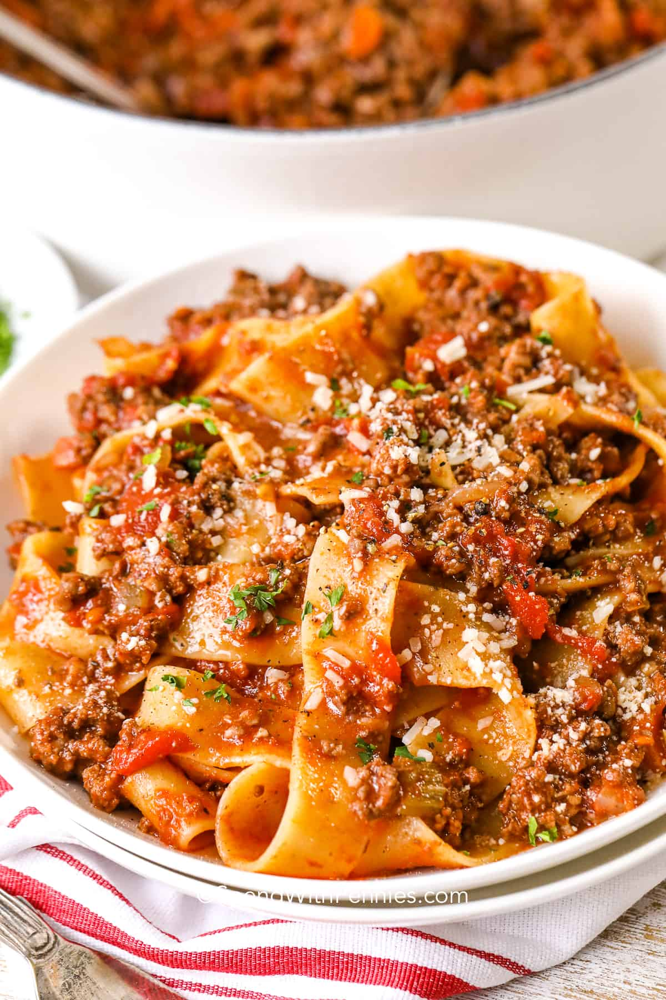

Bolognese

So, what makes Bolognese different than a typical spaghetti sauce?
While both are tomato-based meat sauces made with garlic and onion,
bolognese also includes the addition of celery and carrot plus a little bit of milk.
It may sound unusual, but these ingredients add a distinct flavor, a bit of richness, and some sweetness.
Note: This recipe was originally found from Spend with Pennies
Ingredients
- 2 tablespoons olive oil
- 4 garlic cloves crushed
- 1 onion finely diced
- 1 carrot finely diced
- 1 rib celery finely diced
- 1 pound lean ground beef
- ½ pound ground pork
- 1 ¼ cups red wine or beef broth
- 1 cup whole milk
- 28 ounces whole tomatoes with juice
- 4 tablespoons tomato paste
- 1 teaspoon Italian seasoning
- 1 bay leaf
- ½ teaspoon salt more to taste
- ¼ teaspoon black pepper
- pappardelle or tagliatelle or another long pasta for serving
Cooking Instructions
- In a large dutch oven, cook onion in oil over medium heat until softened, about 3-4 minutes.
- Add garlic, carrot, and celery, and cook until softened, about 5 minutes.
- Add beef and pork, and cook, breaking up with a spoon, until no pink remains. Drain fat.
- Add the wine and simmer uncovered until evaporated, about 10 minutes. Add milk and simmer uncovered until evaporated, about 8 minutes.
- Stir in tomato paste, Italian seasoning, tomatoes with juice, and bay leaf. Break tomatoes up with a spoon. Cover and simmer for 30 minutes or until thickened. Season with salt & pepper to taste.
- Cook pasta according to package directions. Drain, reserving 1 ½ cups of pasta water.
- Toss pasta with sauce, adding pasta water to thin it out if needed.
- Serve hot with parmesan cheese.
back to home